Contents
clear; clc; close all;
a)
load('constrainedLS.mat')
The original optimization problem can be stated as:
Let D be the data matrix which has the data points as its rows and beta is the vector of parameters that we are interested in. Hence  becomes a vector with nth row being 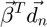 or equivalently
becomes a vector with nth row being 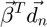 or equivalently 
Using the definition of the norm, we have:
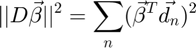
Thus, the optimization problem can be re-written in the matrix form as:
Now we can simplify the problem by performing SVD over the data matrix D. Doing so, we get:
Substituting the SVD back into the matrix form of the optimization problem:
Since U is a transformation matrix, it is not relevant to the minimization problem:
Let 
Therefore,
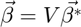
The minimization problem then becomes:
Let 
Therefore,
Now S is a diagonal matrix of shape 300 * 2. Hence it has the first two rows with non-zero diagonal elements. All the remaining rows of S are zeros. Therefore, the transformation of by S creates a 300 dimensional vector with only two non-zero entries. Hence, the minimization problem can be simplified by considering only the first two rows of S. Let this matrix be called S*. The optimization problem can hence be restated as:
Let 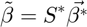
Here, is an orthogonal matrix with non-zero entries along the diagonal and zeros off-diagonal. Therefore,
Here  is the inverse of
is the inverse of  , and since is an orthogonal matrix, we have:
, and since is an orthogonal matrix, we have:
Therefore,
The optimization problem now becomes:
Let
Therefore,
We can re-write  and
and  in terms of 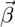 and
in terms of 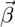 and 
b)
Performing SVD on the original data:
[U, S, V] = svd(data); Ss = S(1:2, :);
The shortest vector 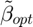 is the one that lies along the direction of . Hence the angle between and is 
The constraint is basically a dot product of the vectors and hence can also be written as:

Since 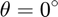, we have
The constraint then becomes:
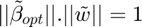
Therefore,
This gives the length of . This vector points in the same direction as and hence the vector can be represented as:
Substituting the length of calculated above:
Computing :
w_tilde = inv(Ss)*V'*w; w_tilde_hat = w_tilde/sqrt(sum(w_tilde.^2)); beta_tilde_opt = w_tilde_hat * 1/sqrt(sum(w_tilde.^2));
Creating a matrix to plot
beta_tilde_opt_fplot = [zeros(2, 1), beta_tilde_opt]; slope_beta_tilde_opt = beta_tilde_opt(2)/beta_tilde_opt(1); slope_perp = -1/slope_beta_tilde_opt; intercept_perp = beta_tilde_opt(2) - slope_perp * beta_tilde_opt(1); data_transformed = U(:, 1:2); % data_transformed = data * V * inv(Ss); figure(1); plot(beta_tilde_opt_fplot(1, :), beta_tilde_opt_fplot(2, :), 'r-o', 'MarkerSize', 5, ... 'DisplayName', '$\tilde{\beta}_{opt}$') hold on; x_perp_p = xlim; y_perp_p = slope_perp * x_perp_p + intercept_perp * [1, 1]; plot(x_perp_p, y_perp_p, 'b', 'LineWidth', 2, ... 'DisplayName', 'constraint line') plot(data_transformed(:, 1), data_transformed(:, 2), 'o') title('Space of beta tilde') hl = legend('show'); set(hl, 'Interpreter', 'latex')
c)
From the previous transformations we have:
Therefore,
Therefore,
Therefore,
Computing from we just computed, we get:
beta_opt = V * inv(Ss)*beta_tilde_opt; beta_opt_fplot = [zeros(2, 1), beta_opt]; w_fplot = [zeros(2, 1), w];
The original contraint line is perpendicular to the projection of  on
on
The projection can be computed as:
The slope of the constraint line is then -1 divided by the slope of the projection of beta_opt on w. The intercept of the constraint line can then be computed by passing the data point beta_opt through the linear regression model with slope just computed. This can then be used to plot the constraint line within the x limits of the plot.
For the total least squares problem, the optimization problem becomes:
$, s.t. \hat{u}||^2 = 1
The minimization goal can be simplified by performing SVD:
Therefore,

Therefore,
Therefore,
V is an orthogonal matrix involved in the transformation of the vector and hence we can define:
And the optimization problem becomes:
Thus, the goal of minimization can be re-written as:
, since is the smallest eigen value
Therefore, in the space of the goal is to pick the column in V that belongs to the smallest eigen value, in this case the second column of V.
scalar_proj = beta_opt' * w / norm(w, 2); beta_opt_proj = scalar_proj * w / norm(w, 2); beta_opt_proj_fplot = [zeros(2, 1), beta_opt_proj]; slope_beta_proj = beta_opt_proj(2)/beta_opt_proj(1); slope_perp_org = -1/slope_beta_proj; intercept_perp_org = beta_opt_proj(2) - slope_perp_org * beta_opt_proj(1); u_opt = V(:, 2); u_opt_fplot = [zeros(2, 1), u_opt]; figure(2); plot(data(:, 1), data(:, 2), 'o') hold on; plot(beta_opt_fplot(1, :), beta_opt_fplot(2, :), 'r-', ... 'DisplayName', '$\vec{\beta}_{opt}$') plot(u_opt_fplot(1, :), u_opt_fplot(2, :), 'm-', 'LineWidth', 2, ... 'DisplayName', '$\hat{u}$') plot(w_fplot(1, :), w_fplot(2, :), 'k-', 'LineWidth', 2, ... 'DisplayName', '$\vec{w}$') x_perp_org = xlim; y_perp_org = slope_perp_org * x_perp_org + intercept_perp_org * [1, 1]; plot(x_perp_org, y_perp_org, 'b', 'LineWidth', 2, ... 'DisplayName', 'constraint line') title('Original space') hl = legend('show'); set(hl, 'Interpreter', 'latex')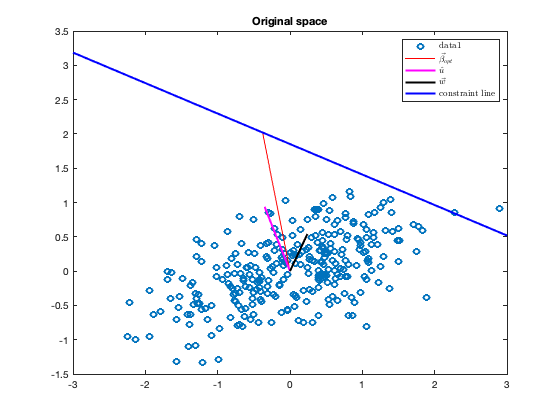